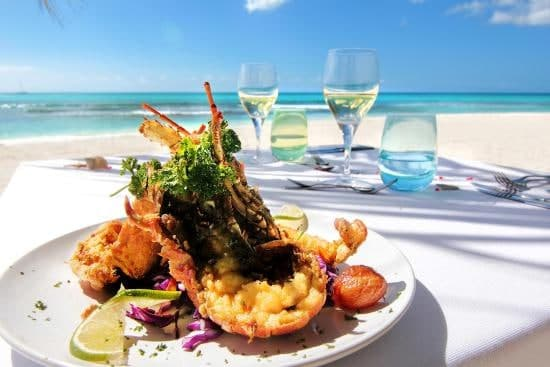
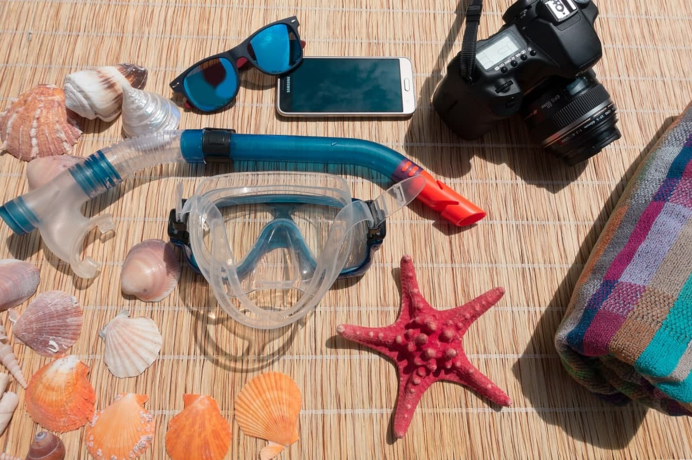

Pulau Redang- Pulau paling popular di Terengganu
Pulau Redang menawarkan air laut yang sangat jernih dan banyak lokasi menyelam yang terbaik di Semenanjung Malaysia. Kalau snorkeling di sini anda boleh berjumpa dengan banyak hidupan marin dengan mudah. Pada waktu tengahari ketika cahaya matahari memancar menembusi laut, dari darat sudah boleh melihat batu karang di dasar laut & ikan-ikan yang berwarna warni berenang.
Pulau Redang sememangnya syurga bagi mereka yang kaki berenang, snorkeling, scuba diving, berkanu dan jungle trekking. Boleh dikatakan Pulau Redang merupakan pulau kegemaran bagi mereka yang bercadang untuk honeymoon di pulau di Terengganu. Harus ingat bahawa aktiviti memancing tidak dibenarkan di dalam 3.2km radius dari Pulau Redang kerana telah digazetkan sebagai taman marin yang terjaga.
Perairan di sekitar Pulau Redang juga mempuyai 2 tempat bersejarah kapal karam , iaitu H.M.S Price of Wales dan H.M.S Repulse yang karam ketika permulaan Perang Dunia Kedua dan era permulaan penjajahan Jepun di Tanah Melayu.
Bagi yang inginkan percutian di pulau di Terengganu yang paling popular, Pulau Redang adalah jawapannya. Selain itu, pilihan hotel di Pulau Redang terutamanya di kawasan tepi pantai juga lebih banyak & menarik.
Peta ke Pulau Redang



Pasirnya putih dan airnya jernih, dengan batu karang dan ikan terdapat hanya beberapa meter dari tepi pantai. Antara kemudahan di pulau ini ialah kegiatan snorkel dan junam.